Количество кликов в сценарии с одним фильтром на компьютере
42
Сокращение времени поиска подходящих направлений для абитуриента
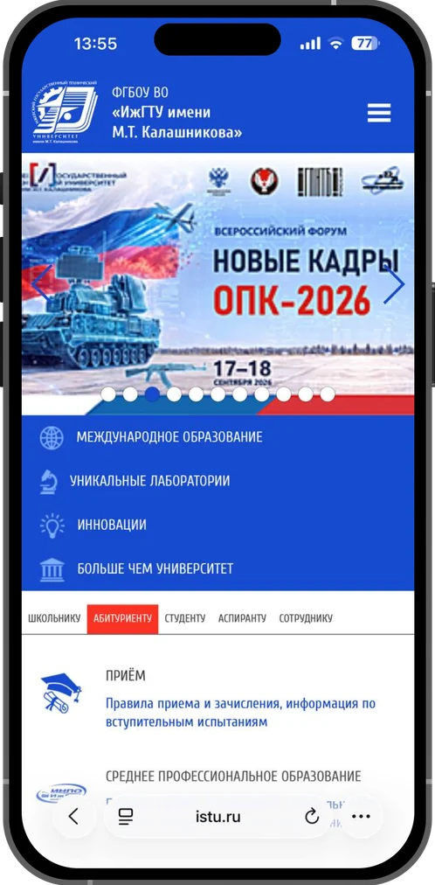
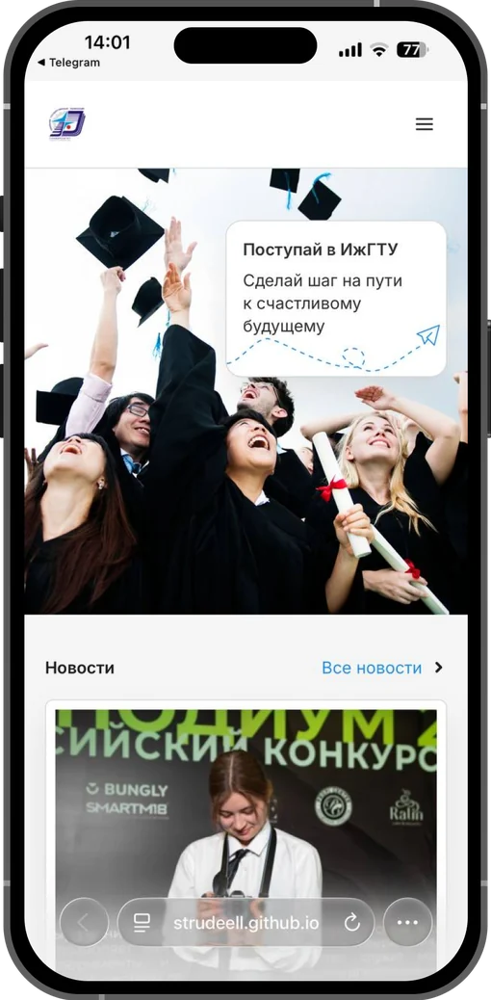
Это можно сделать
на 80 % быстрее…
Сократить время, которое абитуриент тратит на поиск подходящего направления: вместо 9 кликов и нескольких минут блужданий по разделам — пара действий и все важные цифры на одном экране.
Исследовать аудиторию и протестировать действующий сайт, перепроектировать навигацию и каталог образовательных программ: фильтры по баллам и предметам ЕГЭ, форме обучения и стоимости, карточки с проходным баллом и бюджетными местами. Собрать UI-kit и проверить решение повторным тестом.
istu.ru — официальный сайт ИжГТУ им. М. Т. Калашникова. Им пользуются школьники, их родители и студенты, чаще всего с телефона. Проходные баллы, бюджетные места и цены спрятаны глубоко в разделах, а в мобильной версии фильтры оказываются под длинным списком программ. Проект — неофициальный концепт редизайна.
Сейчас чтобы найти нужную образовательную программу, пользователю понадобится 9 кликов!
Зайти в бургер-меню
Кликнуть на раздел Абитуриенту
Выбрать раздел Прием и проскроллить до подраздела Бакалавриат
Кликнуть на раздел Выбрать направление
Пролистать весь перечень программ
Открыть Фильтры
Проскроллить до нужного раздела, кликнуть на него и выбрать фильтры
Проскроллить до конца вверх или низ и нажать кнопку Применить
Проскроллить до конца вверх или низ и нажать кнопку Применить
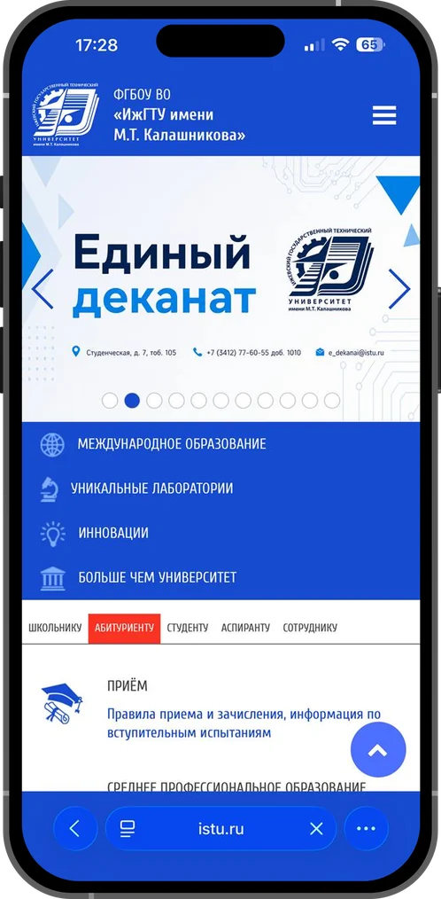
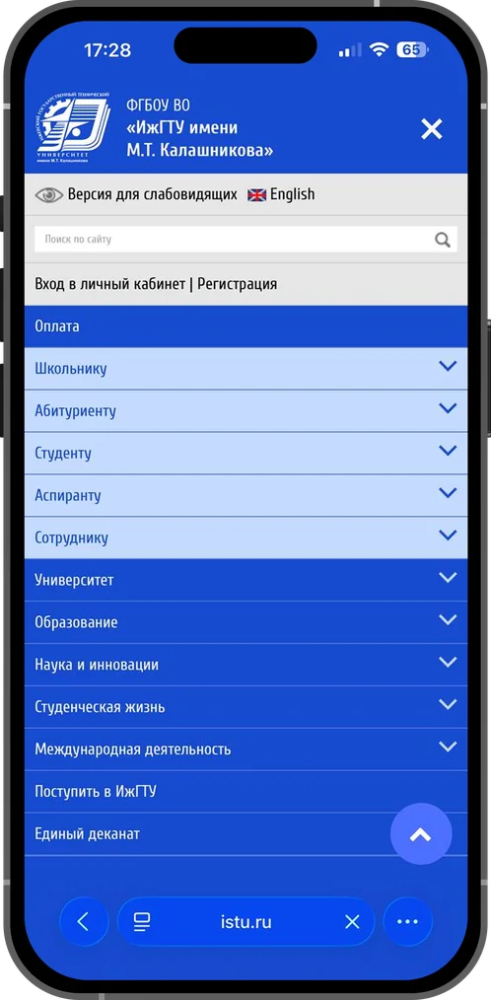
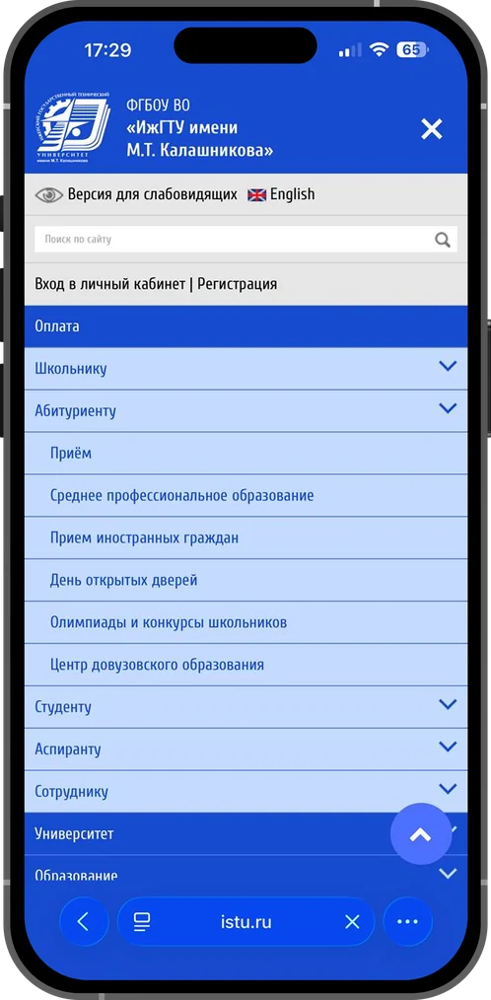
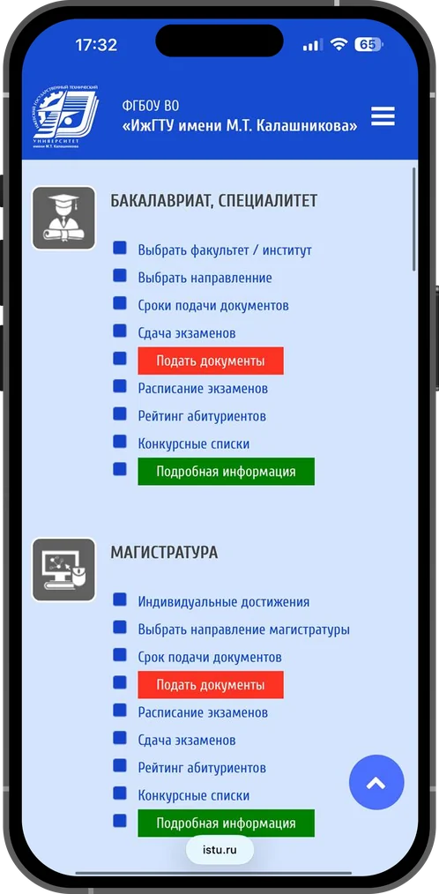
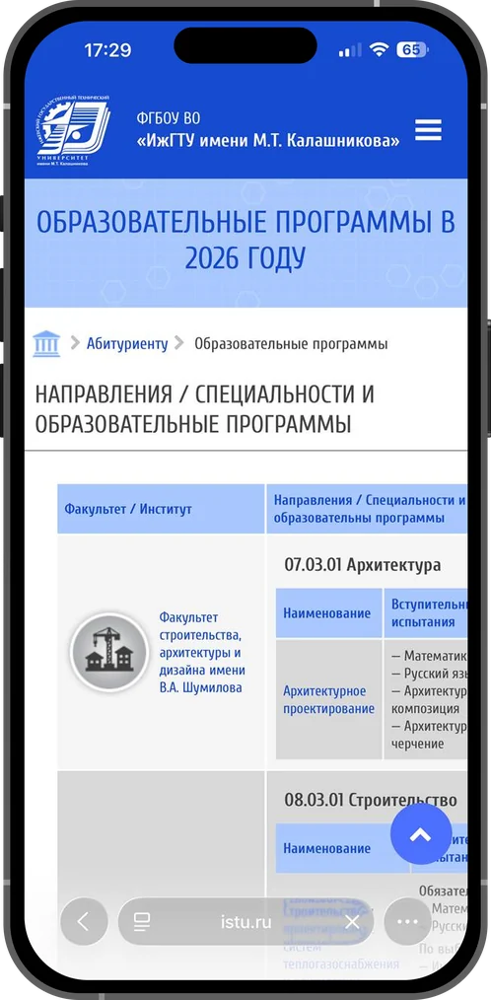
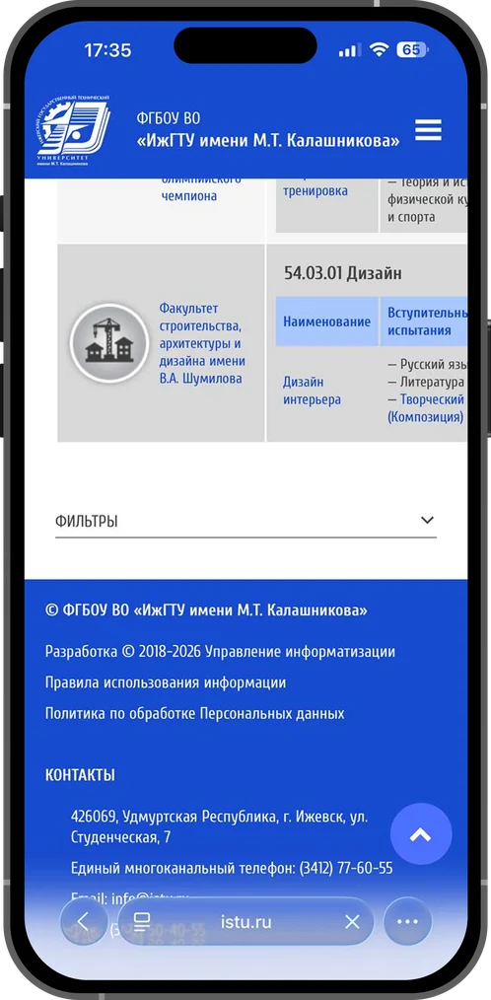
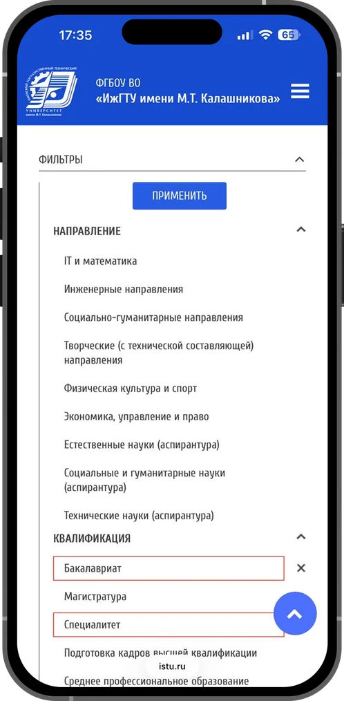
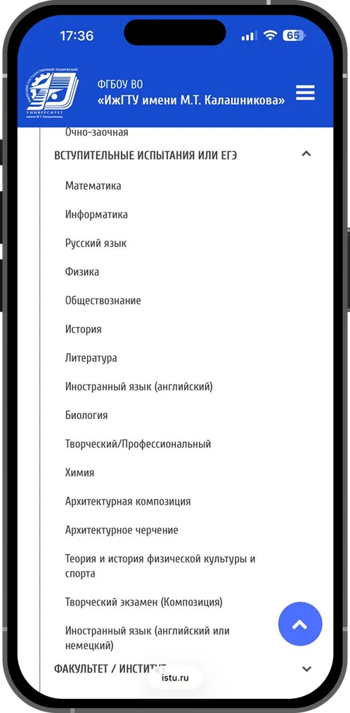
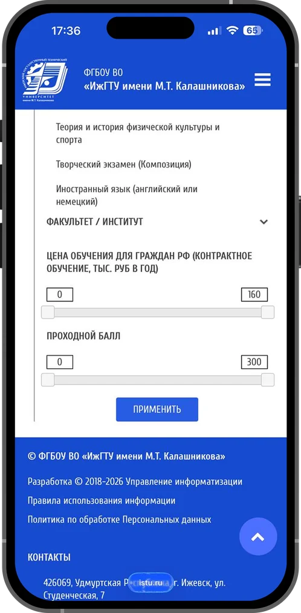
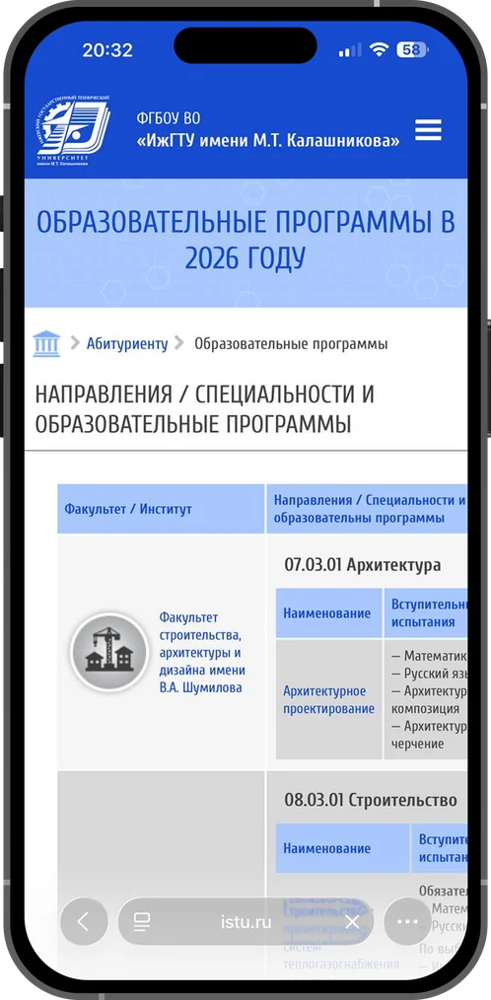
В тестировании участвовали 4 человека из разных сегментов целевой аудитории, всем им необходимо было пройти несколько сценариев на двух устройствах и поделиться впечатлениями, а также пройти анкету SUS для этого сайта
Сценарии по поиску информации:
Провела онлайн‑опрос среди пользователей, чтобы понять, как реализовать фильтры и сортировку, а также список программ и их карточки
С помощью кода визуализировала информацию в формате графиков
Параметры в фильтрах
Информация в списке программ
Голубой цвет ассоциируется с надежностью, спокойствием, доверием и интеллектом, это подходит под тему университета и соответствует тем эмоциям, которые мы хотим вызвать у пользователей
Палитра с акцентом на голубой
Современный гротеск с хорошей читаемостью. Чистый, лаконичный, подходит для цифрового продукта и большого объёма текста
Удобная типографика
Единая система компонентов помогает сохранить целостность интерфейса, ускоряет разработку и делает взаимодействие удобным и предсказуемым.
Многие компоненты я взяла из существующей системы, но часть реализовала самостоятельно, чтобы они вписывались в тему
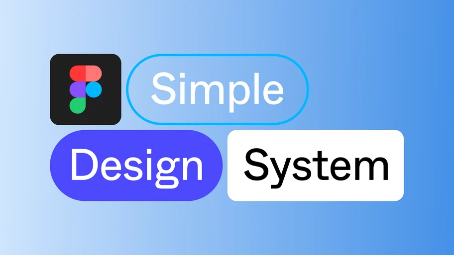
Библиотека компонентов
с единым стилем
Следующим шагом после определения дизайн‑концепции стала разработка вайрфреймов (схематичное представление структуры будущего цифрового продукта)
В данном проекте создание чернового варианта стало важнейшим процессом, так как цель — упростить пользовательский путь, а он продумывается именно на этом этапе
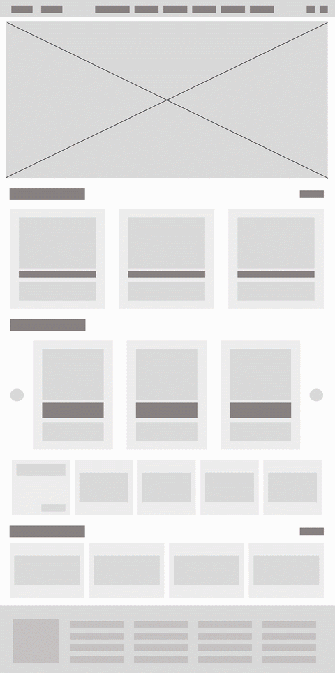
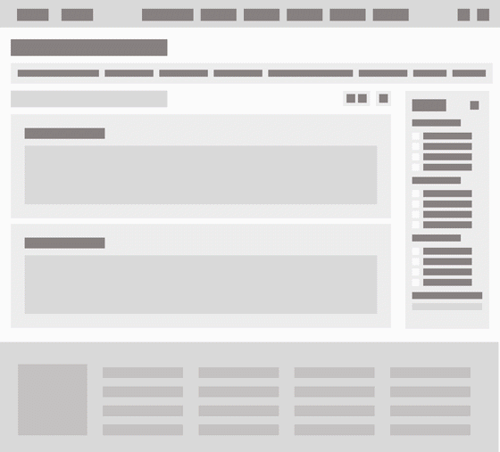
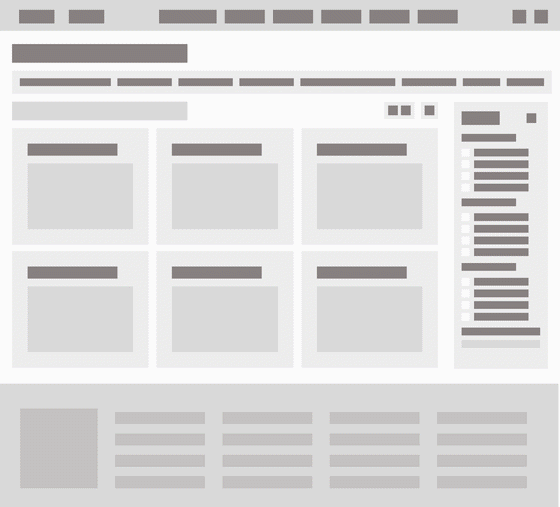
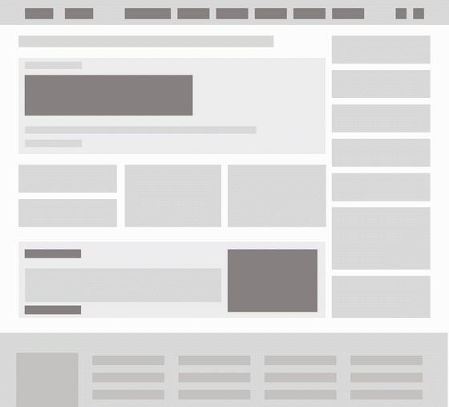
Пользователи проходили те же сценарии, но на новом сайте. Оценивалось время выполнения и учитывались замечания респондентов, а также метрика SUS для редизайна.
42
3:310:24
0/44/4
6696
БылоПервое впечатление от istu.ru
«Много информации, сверху маленькие шрифты»Респондент 2
«Ляпистый»: современные картинки вперемешку со старыми фото, нет единого стиляРеспондент 3
«Огромная реклама, которая неправильно отображается с телефона»Респондент 4
СталоПервое впечатление от редизайна
«Запомнилась чистота интерфейса»Респондент 4
«Интерфейс стал современнее и удобнее»Респондент 2
«Теперь в интерфейсе нет раздражающих факторов, всё чётко и понятно»Респондент 4
3 из 4 респондентов потратили время, чтобы заметить подсказку о том, что русский язык всегда включён, — лучше вернуть его в список.
Один респондент не догадался, что баллы ЕГЭ находятся в фильтрах. Перед доработкой проверить гипотезу необходимости этой правки.
Два респондента искали программы для СПО в выпадающем бургер-меню.